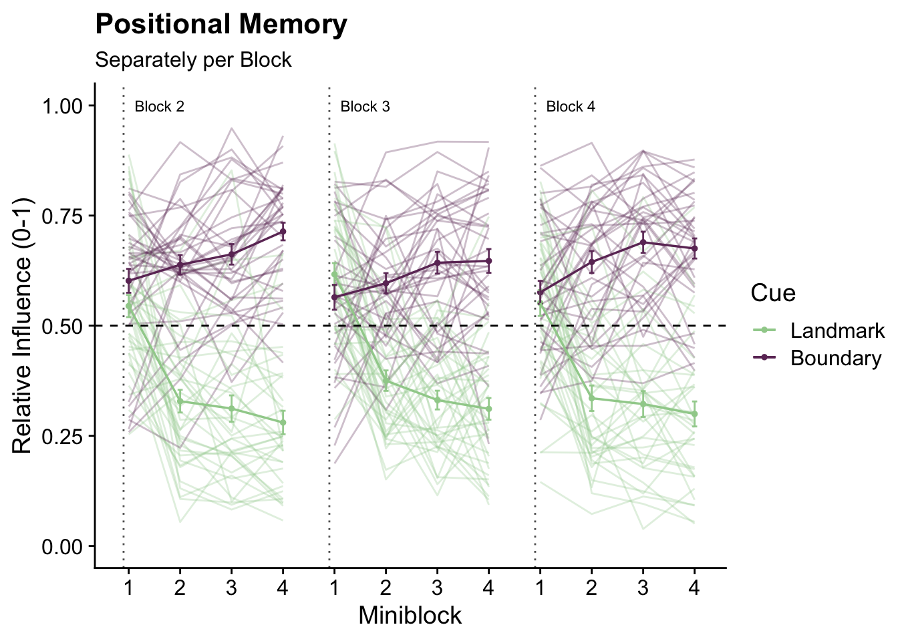
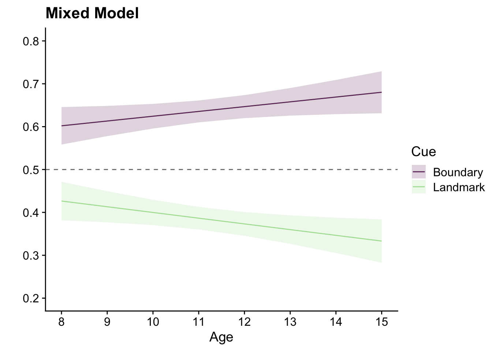
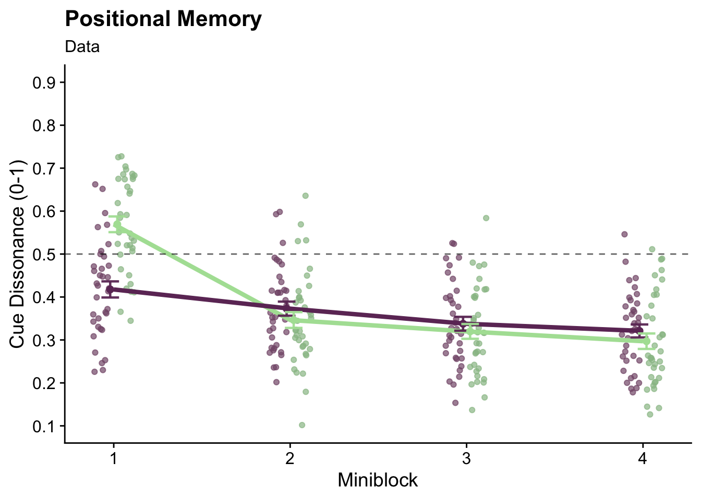

4 Angle estimation analysis
library(lme4)
library(tidyverse)
library(broom)
library(ggsignif)
library(patchwork)
library(gghalves)
library(cowplot)
library(scico)
library(Cairo)
library(ggnewscale)
library(here)
library(effsize)
library(pwr)retrieving subject IDs from the directory
fn <- list.files(path = here("data"), pattern="*_feedbackPhase_block4_Sum")
subjects <- c()
for (i_file in length(fn)) {
subjects <- substr(fn,1,4)
}## Rows: 2413 Columns: 31## ── Column specification ───────────────────────────────────────────────────────────────────────────────────────────────────────────────────────────────────
## Delimiter: " "
## chr (2): cue, object
## dbl (29): ID, age, age_c, block, miniblock, mini, objectTrial, trial, sec2Beg, sec2Est, sec2End, secTrialEst, trialLen, landmarkX, landmarkY, landmarkZ...##
## ℹ Use `spec()` to retrieve the full column specification for this data.
## ℹ Specify the column types or set `show_col_types = FALSE` to quiet this message.## Rows: 2413 Columns: 50## ── Column specification ───────────────────────────────────────────────────────────────────────────────────────────────────────────────────────────────────
## Delimiter: " "
## chr (2): cue, object
## dbl (48): ID, age, age_c, block, miniblock, mini, objectTrial, trial, sec2Beg, dropTime, secTrialRepl, trialLen, sec2End, landmarkX, landmarkY, landmar...##
## ℹ Use `spec()` to retrieve the full column specification for this data.
## ℹ Specify the column types or set `show_col_types = FALSE` to quiet this message.out <- c()
for (i_sub in subjects) {
score <- t.test(subset(Sum_all, ID==i_sub & block==1)$memoryScoreTraj,
mu=0.5, var.equal = FALSE, alternative = "greater") %>% tidy()
if (score$p.value > 0.05) {
out <- c(out, i_sub)
}
}
print(out)## [1] 2739 9431Sum_angle <- filter(Sum_angle, ID != out[1] & ID != out[2])
Sum_all <-filter(Sum_all, ID != out[1] & ID != out[2])Block 1
summaryBlock1_Angle <- Sum_angle %>%
filter(block==1) %>%
group_by(ID, block) %>%
summarise(angleErr = mean(abs(angleError)), relativeAng = mean(relativeAngle), .groups="drop") ## # A tibble: 1 × 8
## estimate statistic p.value parameter conf.low conf.high method alternative
## <dbl> <dbl> <dbl> <dbl> <dbl> <dbl> <chr> <chr>
## 1 20.8 -34.4 7.25e-29 35 -Inf 24.2 One Sample t-test lessg_errB1 <- ggplot(summaryBlock1_Angle, aes(x=block, y=angleErr)) +
geom_half_violin(aes(x=block-0.05), fill=scico(1, palette= "lajolla", begin = 0.45), alpha =0.5, color=NA) +
geom_point(aes(x=block+0.07), position = position_jitter(width =0.02, height = 0), shape=16, size = 1) +
geom_boxplot(width = .05, outlier.shape = NA) +
theme_cowplot() +
geom_hline(yintercept = 90, linetype=2) +
labs(y='Pointing Error (°)', x=' ', title = "Average Absolute Error") +
theme(axis.title = element_text(size=10), axis.text.x = element_blank(),
axis.ticks.x = element_blank(), axis.text.y = element_text(size=10)) +
annotate("text", label = "90°", x = 1.3, y = 85, size = 3)
g_errB1
g_anglB1 <- ggplot(Sum_angle %>% filter(block == 1), aes(x = angleError)) +
geom_histogram(binwidth = 10, boundary = -7.5, fill = scico(1, palette = "lajolla", begin=0.5), color= "black", size = .25) +
coord_polar(start=pi) +
scale_x_continuous(limits = c(-180,180),
breaks = seq(-180, 180, by = 45),
minor_breaks = seq(-180, 180, by = 15)) +
theme_cowplot() +
background_grid() +
labs(x = "Pointing Error (°)", y = "Count", title = "Signed Distribution of Error") +
theme(axis.title.y = element_text(hjust = 0.7))
g_anglB1## Warning: Removed 2 rows containing missing values (geom_bar).
angleEst_B1 <- g_errB1 + g_anglB1 &
theme(axis.title = element_text(size=12), plot.title = element_text(face="italic", size=12)) &
plot_annotation(title = 'Pointing Errors',
theme = theme(plot.title = element_text(size = 14, face="bold")))
ggsave(file="AngleErrors_B1.pdf", plot=angleEst_B1, units = "cm", width = 15.9, height = 10, dpi = "retina", device = cairo_pdf, path = here("figures"))## Warning: Removed 2 rows containing missing values (geom_bar).ggsave(file="AngleErrors_B1.png", plot=angleEst_B1, units = "cm", width = 15.9, height = 10, dpi = "retina", device = "png", path = here("figures"))## Warning: Removed 2 rows containing missing values (geom_bar).## Warning: Removed 2 rows containing missing values (geom_bar).
block1_graphs <- memory_B1 / angleEst_B1 &
theme(axis.title = element_text(size=10), axis.text = element_text(size=10),
plot.title = element_text(face="italic", size=12),
legend.text = element_text(size=10), legend.title = element_text(size=10),
plot.tag = element_text(size = 10, face="bold")) &
plot_annotation(title = 'Block 1 Performance',
subtitle = ' \nPositional Memory',
theme = theme(plot.title = element_text(size = 14, face="bold"), plot.subtitle = element_text(size=12, face="bold")),
tag_levels = 'A')
block1_graphs## Warning: Removed 1 rows containing non-finite values (stat_density2d).## Warning: Removed 396 rows containing missing values (geom_raster).## Warning: Removed 1 rows containing missing values (geom_point).## Warning: Removed 2 rows containing missing values (geom_bar).
ggsave(file="B1.pdf", plot=block1_graphs, units = "cm", width = 15, height = 16, dpi = "retina", device = cairo_pdf, path = here("figures"))## Warning: Removed 1 rows containing non-finite values (stat_density2d).## Warning: Removed 396 rows containing missing values (geom_raster).## Warning: Removed 1 rows containing missing values (geom_point).## Warning: Removed 2 rows containing missing values (geom_bar).ggsave(file="B1.png", plot=block1_graphs, units = "cm", width = 15, height = 16, dpi = "retina", device = "png", path = here("figures"))## Warning: Removed 1 rows containing non-finite values (stat_density2d).## Warning: Removed 396 rows containing missing values (geom_raster).## Warning: Removed 1 rows containing missing values (geom_point).## Warning: Removed 2 rows containing missing values (geom_bar).Cue
subset_RA <- Sum_angle %>%
filter(block!=1) %>%
select(-object, -sec2Beg, -sec2Est, -sec2End, -trialLen, -secTrialEst) %>%
mutate(cueMM = recode(cue, "boundary" = 1, "landmark" = -1), mini = scale(miniblock, center = TRUE, scale = FALSE), ID = as.factor(ID))
relativeAngleBlocks <- subset_RA %>%
group_by(ID, cue, age) %>%
summarise(angleErr = mean(abs(angleError)), relativeAng = mean(relativeAngle), raSD = sd(relativeAngle), .groups="drop")t.test(subset(relativeAngleBlocks, cue=="landmark")$relativeAng,
mu = 0.5, alternative = "less") %>% tidy()## # A tibble: 1 × 8
## estimate statistic p.value parameter conf.low conf.high method alternative
## <dbl> <dbl> <dbl> <dbl> <dbl> <dbl> <chr> <chr>
## 1 0.377 -7.63 0.00000000299 35 -Inf 0.405 One Sample t-test less##
## Cohen's d (single sample)
##
## d estimate: -1.271776 (large)
## Reference mu: 0.5
## 95 percent confidence interval:
## lower upper
## -2.0137388 -0.5298135t.test(subset(relativeAngleBlocks, cue=="boundary")$relativeAng,
mu = 0.5, alternative = "greater") %>% tidy()## # A tibble: 1 × 8
## estimate statistic p.value parameter conf.low conf.high method alternative
## <dbl> <dbl> <dbl> <dbl> <dbl> <dbl> <chr> <chr>
## 1 0.585 7.71 0.00000000239 35 0.567 Inf One Sample t-test greater##
## Cohen's d (single sample)
##
## d estimate: 1.2847 (large)
## Reference mu: 0.5
## 95 percent confidence interval:
## lower upper
## 0.5414638 2.0279358t.test(subset(relativeAngleBlocks, cue=="boundary")$relativeAng,
subset(relativeAngleBlocks, cue=="landmark")$relativeAng, paired = TRUE) %>% tidy()## # A tibble: 1 × 8
## estimate statistic p.value parameter conf.low conf.high method alternative
## <dbl> <dbl> <dbl> <dbl> <dbl> <dbl> <chr> <chr>
## 1 0.208 9.30 5.48e-11 35 0.162 0.253 Paired t-test two.sidedcohen.d(subset(relativeAngleBlocks, cue=="boundary")$relativeAng,
subset(relativeAngleBlocks, cue=="landmark")$relativeAng, paired=TRUE)##
## Cohen's d
##
## d estimate: 2.532636 (large)
## 95 percent confidence interval:
## lower upper
## 1.418460 3.646813pwr.t.test(n = 36, d = 2.532636, sig.level = 0.05, power = NULL, type = c("paired"), alternative = c("two.sided"))##
## Paired t test power calculation
##
## n = 36
## d = 2.532636
## sig.level = 0.05
## power = 1
## alternative = two.sided
##
## NOTE: n is number of *pairs*rel_InfAng <- ggplot(relativeAngleBlocks, aes(x=cue, y=relativeAng)) +
scale_x_discrete(labels = c('Boundary', 'Landmark')) +
gghalves::geom_half_violin(data=relativeAngleBlocks %>% filter(cue=="landmark"),
position=position_nudge(+0.2), aes(fill=cue),alpha =0.7, color=NA, side="r") +
gghalves::geom_half_violin(data=relativeAngleBlocks %>% filter(cue=="boundary"),
position=position_nudge(-0.2), aes(fill=cue),alpha =0.7, color=NA, side="l") +
scale_fill_scico_d(palette = 'tokyo', begin=0.15, end=0.85) +
geom_point(shape=16, size = 1) +
geom_boxplot(data=relativeAngleBlocks %>% filter(cue=="landmark"),
position=position_nudge(+0.1), width = .1, outlier.shape = NA) +
geom_boxplot(data= relativeAngleBlocks %>% filter(cue=="boundary"),
position=position_nudge(-0.1), width = .1, outlier.shape = NA) +
geom_line(aes(group=ID), alpha=0.5) +
theme_cowplot() +
labs(x = " ", y = "Relative Influence (0-1)",
title = "Pointing") +
geom_signif(comparisons = list(c("landmark", "boundary")), test="t.test",
test.args=list(alternative = "two.sided", paired=TRUE),
map_signif_level = TRUE, tip_length = 0, extend_line = 0.045, y_position = 0.85) +
geom_hline(yintercept=0.5, linetype=2, alpha=0.6) +
scale_y_continuous(limits=c(0.1, 0.9), breaks = c(0.1,0.2,0.3,0.4,0.5,0.6,0.7,0.8,0.9))
ggsave("relativeInfluenceAng.pdf", plot=rel_InfAng, units = "cm", width = 15, height = 12, dpi = "retina", device = cairo_pdf, path = here("figures"))
ggsave("relativeInfluenceAng.png", plot=rel_InfAng, units = "cm", width = 15, height = 12, dpi = "retina", device = "png", path = here("figures"))
rel_InfAng
relative_infl <- rel_Inf / rel_InfAng &
theme(axis.title = element_text(size=10), axis.text = element_text(size=10),
plot.title = element_text(face="italic", size=12),
plot.tag = element_text(size = 10, face="bold"),
legend.position = "none") &
plot_annotation(title = "Relative Influence",
theme = theme(plot.title = element_text(size = 12, face="bold")),
tag_levels = 'A')
ggsave("relativeInfluenceAll.pdf", plot=relative_infl, units = "cm", width = 11, height = 15, dpi = "retina", device = cairo_pdf, path = here("figures"))
ggsave("relativeInfluenceAll.png", plot=relative_infl, units = "cm", width = 11, height = 15, dpi = "retina", device = "png", path = here("figures"))
relative_infl
t.test(subset(relativeAngleBlocks, cue=="boundary")$angleErr, subset(relativeAngleBlocks, cue=="landmark")$angleErr, paired = TRUE) %>% tidy()## # A tibble: 1 × 8
## estimate statistic p.value parameter conf.low conf.high method alternative
## <dbl> <dbl> <dbl> <dbl> <dbl> <dbl> <chr> <chr>
## 1 1.29 0.810 0.424 35 -1.95 4.53 Paired t-test two.sidedcue_Ang <- ggplot(relativeAngleBlocks, aes(x=cue, y= angleErr)) +
scale_x_discrete(labels = c('Boundary', 'Landmark')) +
gghalves::geom_half_violin(data=relativeAngleBlocks %>% filter(cue=="landmark"),
position=position_nudge(+0.2), aes(fill=cue),alpha =0.7, color=NA, side="r") +
gghalves::geom_half_violin(data=relativeAngleBlocks %>% filter(cue=="boundary"),
position=position_nudge(-0.2), aes(fill=cue),alpha =0.7, color=NA, side="l") +
scale_fill_scico_d(palette = 'tokyo', begin=0.15, end=0.85) +
geom_point(shape=16, size = 1) +
geom_boxplot(data=relativeAngleBlocks %>% filter(cue=="landmark"),
position=position_nudge(+0.1), width = .1, outlier.shape = NA) +
geom_boxplot(data=relativeAngleBlocks %>% filter(cue=="boundary"),
position=position_nudge(-0.1), width = .1, outlier.shape = NA) +
geom_line(aes(group=ID), alpha=0.5) +
theme_cowplot() +
labs(x = " ", y = "Pointing Error (°)",
title = "Pointing") +
geom_signif(comparisons = list(c("landmark", "boundary")), test="t.test",
test.args=list(alternative = "two.sided", paired=TRUE),
map_signif_level = TRUE, tip_length = 0, extend_line = 0.045, y_position = 92) +
scale_y_continuous(breaks = c(25, 50, 75, 100), limits = c(9,100))
ggsave("angleError.pdf", plot=cue_Ang, units = "cm", width = 15.9, height = 12, dpi = "retina", device = cairo_pdf, path = here("figures"))
ggsave("angleError.png", plot=cue_Ang, units = "cm", width = 15.9, height = 12, dpi = "retina", device = "png", path = here("figures"))
cue_Ang
cue_Diff <- g_cue / cue_Ang &
theme(axis.title = element_text(size=10), axis.text = element_text(size=10),
plot.title = element_text(face="italic", size=12),
plot.tag = element_text(size = 10, face="bold"),
legend.position = "none") &
plot_annotation(title = "Raw Performance Differences",
theme = theme(plot.title = element_text(size = 12, face="bold")),
tag_levels = 'A')
ggsave("cueDiffAll.pdf", plot=cue_Diff, units = "cm", width = 11, height = 15, dpi = "retina", device = cairo_pdf, path = here("figures"))
ggsave("cueDiffAll.png", plot=cue_Diff, units = "cm", width = 11, height = 15, dpi = "retina", device = "png", path = here("figures"))
cue_Diff
formulaCue <- "relativeAngle ~ cueMM + (1+cueMM|ID)"
modelCueAngle <- lme4::lmer(formula = formulaCue, data=subset_RA)
summary(modelCueAngle)## Linear mixed model fit by REML ['lmerMod']
## Formula: relativeAngle ~ cueMM + (1 + cueMM | ID)
## Data: subset_RA
##
## REML criterion at convergence: 282.9
##
## Scaled residuals:
## Min 1Q Median 3Q Max
## -2.31788 -0.76606 -0.00187 0.75191 2.72597
##
## Random effects:
## Groups Name Variance Std.Dev. Corr
## ID (Intercept) 0.0009399 0.03066
## cueMM 0.0030925 0.05561 -0.70
## Residual 0.0663842 0.25765
## Number of obs: 1709, groups: ID, 36
##
## Fixed effects:
## Estimate Std. Error t value
## (Intercept) 0.480968 0.008061 59.67
## cueMM 0.103895 0.011172 9.30
##
## Correlation of Fixed Effects:
## (Intr)
## cueMM -0.369formulaControl <- "relativeAngle ~ 1 + (1+cueMM|ID)"
modelCueControl <- lme4::lmer(formula = formulaControl, data=subset_RA)
ratioCueAngle <- anova(modelCueAngle, modelCueControl)## refitting model(s) with ML (instead of REML)## Data: subset_RA
## Models:
## modelCueControl: relativeAngle ~ 1 + (1 + cueMM | ID)
## modelCueAngle: relativeAngle ~ cueMM + (1 + cueMM | ID)
## npar AIC BIC logLik deviance Chisq Df Pr(>Chisq)
## modelCueControl 5 322.54 349.76 -156.27 312.54
## modelCueAngle 6 279.80 312.46 -133.90 267.80 44.747 1 2.242e-11 ***
## ---
## Signif. codes: 0 '***' 0.001 '**' 0.01 '*' 0.05 '.' 0.1 ' ' 1MINIBLOCKS
formulaMiniblocks <- "relativeAngle ~ cue*mini + (1+mini:cueMM|ID)"
modelMiniblocksCue <- lme4::lmer(formula = formulaMiniblocks, data=subset_RA)
summary(modelMiniblocksCue)## Linear mixed model fit by REML ['lmerMod']
## Formula: relativeAngle ~ cue * mini + (1 + mini:cueMM | ID)
## Data: subset_RA
##
## REML criterion at convergence: 246.3
##
## Scaled residuals:
## Min 1Q Median 3Q Max
## -2.42101 -0.74427 -0.01048 0.77715 2.56172
##
## Random effects:
## Groups Name Variance Std.Dev. Corr
## ID (Intercept) 0.0009238 0.03039
## mini:cueMM 0.0003289 0.01814 0.05
## Residual 0.0655204 0.25597
## Number of obs: 1709, groups: ID, 36
##
## Fixed effects:
## Estimate Std. Error t value
## (Intercept) 0.585126 0.010121 57.816
## cuelandmark -0.208334 0.012384 -16.822
## mini 0.025078 0.008392 2.988
## cuelandmark:mini -0.095901 0.012614 -7.603
##
## Correlation of Fixed Effects:
## (Intr) clndmr mini
## cuelandmark -0.612
## mini 0.008 0.001
## culndmrk:mn -0.012 0.000 -0.752formulaMiniControl <- "relativeAngle ~ mini+cueMM + (1+mini:cueMM|ID)"
modelMiniControlInt <- lme4::lmer(formula = formulaMiniControl, data=subset_RA)
ratioMiniblocksInt <- anova(modelMiniblocksCue, modelMiniControlInt)## refitting model(s) with ML (instead of REML)## Data: subset_RA
## Models:
## modelMiniControlInt: relativeAngle ~ mini + cueMM + (1 + mini:cueMM | ID)
## modelMiniblocksCue: relativeAngle ~ cue * mini + (1 + mini:cueMM | ID)
## npar AIC BIC logLik deviance Chisq Df Pr(>Chisq)
## modelMiniControlInt 7 265.05 303.16 -125.53 251.05
## modelMiniblocksCue 8 232.03 275.58 -108.02 216.03 35.018 1 3.266e-09 ***
## ---
## Signif. codes: 0 '***' 0.001 '**' 0.01 '*' 0.05 '.' 0.1 ' ' 1formulaMiniblocksAngle <- "relativeAngle ~ mini + (1+mini|ID)"
modelMiniblocksLandmarkAngle <- lme4::lmer(formula = formulaMiniblocksAngle, data=subset(subset_RA, cue=="landmark"))
summary(modelMiniblocksLandmarkAngle) ## Linear mixed model fit by REML ['lmerMod']
## Formula: relativeAngle ~ mini + (1 + mini | ID)
## Data: subset(subset_RA, cue == "landmark")
##
## REML criterion at convergence: 84.3
##
## Scaled residuals:
## Min 1Q Median 3Q Max
## -2.0969 -0.7382 -0.1703 0.6549 2.6269
##
## Random effects:
## Groups Name Variance Std.Dev. Corr
## ID (Intercept) 0.0065886 0.08117
## mini 0.0004984 0.02232 -0.12
## Residual 0.0597956 0.24453
## Number of obs: 855, groups: ID, 36
##
## Fixed effects:
## Estimate Std. Error t value
## (Intercept) 0.376991 0.015908 23.698
## mini -0.070415 0.008354 -8.429
##
## Correlation of Fixed Effects:
## (Intr)
## mini -0.044formulaMiniControl <- "relativeAngle ~ 1 + (1+mini|ID)"
modelMiniLandmarkControl <- lme4::lmer(formula = formulaMiniControl, data=subset(subset_RA, cue=="landmark"))
ratioMiniLandmark = anova(modelMiniblocksLandmarkAngle, modelMiniLandmarkControl)## refitting model(s) with ML (instead of REML)## Data: subset(subset_RA, cue == "landmark")
## Models:
## modelMiniLandmarkControl: relativeAngle ~ 1 + (1 + mini | ID)
## modelMiniblocksLandmarkAngle: relativeAngle ~ mini + (1 + mini | ID)
## npar AIC BIC logLik deviance Chisq Df Pr(>Chisq)
## modelMiniLandmarkControl 5 119.927 143.68 -54.963 109.927
## modelMiniblocksLandmarkAngle 6 82.126 110.63 -35.063 70.126 39.801 1 2.812e-10 ***
## ---
## Signif. codes: 0 '***' 0.001 '**' 0.01 '*' 0.05 '.' 0.1 ' ' 1formulaMiniblocksAngle <- "relativeAngle ~ mini + (1+mini|ID)"
modelMiniblocksBoundaryAngle <- lme4::lmer(formula = formulaMiniblocksAngle, data=subset(subset_RA,cue=="boundary"))## boundary (singular) fit: see ?isSingular## Linear mixed model fit by REML ['lmerMod']
## Formula: relativeAngle ~ mini + (1 + mini | ID)
## Data: subset(subset_RA, cue == "boundary")
##
## REML criterion at convergence: 122.4
##
## Scaled residuals:
## Min 1Q Median 3Q Max
## -2.4376 -0.7092 0.1334 0.7970 1.7836
##
## Random effects:
## Groups Name Variance Std.Dev. Corr
## ID (Intercept) 1.674e-03 0.040913
## mini 6.254e-06 0.002501 -1.00
## Residual 6.522e-02 0.255384
## Number of obs: 854, groups: ID, 36
##
## Fixed effects:
## Estimate Std. Error t value
## (Intercept) 0.584996 0.011088 52.762
## mini 0.024989 0.007821 3.195
##
## Correlation of Fixed Effects:
## (Intr)
## mini -0.034
## optimizer (nloptwrap) convergence code: 0 (OK)
## boundary (singular) fit: see ?isSingularformulaMiniControl <- "relativeAngle ~ 1 + (1+mini|ID)"
modelMiniBoundaryControl <- lme4::lmer(formula = formulaMiniControl, data=subset(subset_RA, cue=="boundary"))
ratioMiniBoundary = anova(modelMiniblocksBoundaryAngle, modelMiniBoundaryControl)## refitting model(s) with ML (instead of REML)## Data: subset(subset_RA, cue == "boundary")
## Models:
## modelMiniBoundaryControl: relativeAngle ~ 1 + (1 + mini | ID)
## modelMiniblocksBoundaryAngle: relativeAngle ~ mini + (1 + mini | ID)
## npar AIC BIC logLik deviance Chisq Df Pr(>Chisq)
## modelMiniBoundaryControl 5 126.59 150.34 -58.296 116.59
## modelMiniblocksBoundaryAngle 6 119.31 147.81 -53.654 107.31 9.2834 1 0.002312 **
## ---
## Signif. codes: 0 '***' 0.001 '**' 0.01 '*' 0.05 '.' 0.1 ' ' 1summary_miniblock_A <- subset_RA %>%
group_by(ID, miniblock, cue, age) %>%
summarise(angleErr = mean(abs(angleError)),
aeSD = sd(abs(angleError)),
relativeAng = mean(relativeAngle),
raSD = sd(relativeAngle),
.groups = "drop")
g_miniAng <- ggplot(summary_miniblock_A, aes(miniblock, relativeAng, group=interaction(cue, ID), color=cue)) +
geom_line(size=0.8, alpha = 0.3) +
stat_summary(data= subset(summary_miniblock_A, cue=="boundary"), fun.data=mean_se,
aes(group=cue), geom="errorbar", width=0.1, position = position_nudge(x=0.01)) +
stat_summary(data= subset(summary_miniblock_A, cue=="landmark"), fun.data=mean_se,
aes(group=cue), geom="errorbar", width=0.1, position=position_nudge(x=-0.01)) +
stat_summary(fun=mean, aes(group=cue), geom="line", size = 1.5) +
stat_summary(fun=mean, aes(group=cue), geom="point", size=2) +
geom_hline(yintercept = 0.5, linetype = 2) +
theme_cowplot() +
labs(x= "Miniblock", y = "Relative Influence (0-1)", title = "Averaged across Blocks", color = "Cue") +
theme(plot.title = element_text(size=12, face="italic"),
axis.title = element_text(size=10),
axis.text = element_text(size=10)) +
scale_color_scico_d(palette = 'tokyo', begin=0.2, end=0.8, labels = c("Boundary", "Landmark")) +
scale_y_continuous(breaks = c(0, 0.25, 0.5, 0.75, 1), limits = c(0,1)) +
scale_x_continuous(limits = c(0.5, 4.5), breaks = c(1,2,3,4))
g_miniAng
#data summarizing
summary_objectTrial_A <- subset_RA %>%
group_by(ID, objectTrial, cue) %>%
summarise(relativeAng = mean(relativeAngle),
raSD = sd(relativeAngle), .groups="drop")
#graph
g_objTrialAng <- ggplot(data=summary_objectTrial_A, aes(objectTrial, relativeAng, group=interaction(cue, ID), color=cue)) +
theme_cowplot() +
geom_line(data= subset(summary_objectTrial_A, objectTrial < 9), size=0.8, alpha = 0.3) +
geom_line(data= subset(summary_objectTrial_A, objectTrial < 13 & objectTrial > 8), size=0.8, alpha = 0.3) +
geom_line(data= subset(summary_objectTrial_A, objectTrial > 12), size=0.8, alpha = 0.3) +
scale_color_scico_d(palette = 'tokyo', begin=0.2, end=0.8, labels = c("Boundary, Landmark")) +
labs(x= "Miniblock", y = "Relative Influence (0-1)", title= "Separately per Block", color= "Cue") +
stat_summary(data = subset(summary_objectTrial_A, objectTrial < 9), fun=mean, aes(group=cue), geom="line", size = 1.5) +
stat_summary(data = subset(summary_objectTrial_A, objectTrial < 13 & objectTrial > 8), fun=mean, aes(group=cue),
geom="line", size = 1.5) +
stat_summary(data = subset(summary_objectTrial_A, objectTrial > 12), fun=mean, aes(group=cue), geom="line", size = 1.5) +
stat_summary(data= subset(summary_objectTrial_A, cue=="boundary"), fun.data = mean_se,
aes(group=cue), geom = "errorbar", width=0.1, position = position_nudge(x=+0.01)) +
stat_summary(data= subset(summary_objectTrial_A, cue=="landmark"), fun.data = mean_se,
aes(group=cue), geom = "errorbar", width=0.1, position = position_nudge(x=-0.01)) +
stat_summary(fun=mean, aes(group=cue), geom="point", size=2) +
geom_hline(yintercept = 0.5, linetype = 2) +
geom_vline(xintercept = 8.9, alpha = 0.7, linetype=3) +
geom_vline(xintercept = 12.9, alpha = 0.7, linetype=3) +
geom_vline(xintercept = 4.9, alpha = 0.7, linetype=3) +
scale_y_continuous(breaks = c(0, 0.25, 0.5, 0.75, 1), limits = c(0,1)) +
scale_x_continuous(breaks = c(5, 6, 7, 8, 9, 10, 11, 12, 13, 14, 15, 16),
labels = c("1", "2", "3", "4", "1", "2", "3", "4", "1", "2", "3", "4")) +
annotate("text", label = "Block 2", x = 5.6, y = 1, size = 3) +
annotate("text", label = "Block 3", x = 9.6, y = 1, size = 3) +
annotate("text", label = "Block 4", x = 13.6, y = 1, size = 3) +
theme(legend.position = "none")
g_objTrialAng 
layout <- "
AAAAAA
AAAAAA
AAAAAA
BB####
BB#C##
BB####
"
g_leg <- guide_area()
g_minAng <- g_objTrialAng + g_miniAng + g_leg +
plot_layout(design = layout, guides = "collect") &
theme(axis.title = element_text(size = 10), axis.text = element_text(size=10),
legend.title = element_text(size=10), legend.text = element_text(size=10),
plot.title = element_text(size=12, face="italic"),
plot.tag = element_text(size = 10, face="bold")) &
plot_annotation(title = 'Pointing Error',
theme = theme(plot.title = element_text(size = 12, face="bold")),
tag_levels = list(c('C', 'D')))
g_minAng
ggsave("relativeAngle_min.pdf", plot=g_minAng, units = "cm", width = 15, height = 13, dpi = "retina", device = cairo_pdf, path = here("figures"))
ggsave("relativeAngle_min.png", plot=g_minAng, units = "cm", width = 15, height = 13, dpi = "retina", device = "png", path = here("figures"))AGE
Age_c <- subset_RA %>%
group_by(ID) %>%
distinct(age) %>%
ungroup() %>%
mutate(age_c = scale(age, center=TRUE, scale=FALSE))
subset_RA <- inner_join(subset_RA, Age_c%>%select(ID, age_c), by="ID")
subset_RA <- rename(subset_RA, age_c=age_c.x)
formulaFinalAngle <- "relativeAngle ~ age_c*cueMM+(1+cueMM|ID)"
modelFinalAngle <- lme4::lmer(formula = formulaFinalAngle, data=subset_RA)
summary(modelFinalAngle)## Linear mixed model fit by REML ['lmerMod']
## Formula: relativeAngle ~ age_c * cueMM + (1 + cueMM | ID)
## Data: subset_RA
##
## REML criterion at convergence: 298
##
## Scaled residuals:
## Min 1Q Median 3Q Max
## -2.32041 -0.76424 0.00073 0.75256 2.72064
##
## Random effects:
## Groups Name Variance Std.Dev. Corr
## ID (Intercept) 0.0009999 0.03162
## cueMM 0.0028800 0.05367 -0.74
## Residual 0.0663887 0.25766
## Number of obs: 1709, groups: ID, 36
##
## Fixed effects:
## Estimate Std. Error t value
## (Intercept) 0.4808813 0.0081688 58.868
## age_c 0.0004211 0.0035473 0.119
## cueMM 0.1032919 0.0109096 9.468
## age_c:cueMM 0.0079208 0.0047331 1.673
##
## Correlation of Fixed Effects:
## (Intr) age_c cueMM
## age_c -0.035
## cueMM -0.392 0.010
## age_c:cueMM 0.010 -0.390 -0.032controlFinal <- "relativeAngle ~ age_c+cueMM+(1+cueMM|ID)"
modelControl <- lme4::lmer(formula = controlFinal, data=subset_RA)
ratioFinalAngle <- anova(modelFinalAngle, modelControl)## refitting model(s) with ML (instead of REML)## Data: subset_RA
## Models:
## modelControl: relativeAngle ~ age_c + cueMM + (1 + cueMM | ID)
## modelFinalAngle: relativeAngle ~ age_c * cueMM + (1 + cueMM | ID)
## npar AIC BIC logLik deviance Chisq Df Pr(>Chisq)
## modelControl 7 281.12 319.22 -133.56 267.12
## modelFinalAngle 8 280.26 323.81 -132.13 264.26 2.8538 1 0.09116 .
## ---
## Signif. codes: 0 '***' 0.001 '**' 0.01 '*' 0.05 '.' 0.1 ' ' 1formulaAgeLandmark <- "relativeAngle ~ age_c + (1|ID)"
modelAgeLandmark <- lme4::lmer(formula = formulaAgeLandmark, data=subset(subset_RA, cue=="landmark"))
summary(modelAgeLandmark)## Linear mixed model fit by REML ['lmerMod']
## Formula: relativeAngle ~ age_c + (1 | ID)
## Data: subset(subset_RA, cue == "landmark")
##
## REML criterion at convergence: 167.9
##
## Scaled residuals:
## Min 1Q Median 3Q Max
## -1.7349 -0.8084 -0.1823 0.6595 2.6945
##
## Random effects:
## Groups Name Variance Std.Dev.
## ID (Intercept) 0.006381 0.07988
## Residual 0.066803 0.25846
## Number of obs: 855, groups: ID, 36
##
## Fixed effects:
## Estimate Std. Error t value
## (Intercept) 0.377666 0.015992 23.615
## age_c -0.007531 0.006936 -1.086
##
## Correlation of Fixed Effects:
## (Intr)
## age_c -0.031controlAgeLandmark <- "relativeAngle ~ 1 + (1 |ID)"
modelControlAgeLandmark <- lme4::lmer(formula = controlAgeLandmark, data=subset(subset_RA, cue=="landmark"))
ratioAgeLandmark <- anova(modelAgeLandmark, modelControlAgeLandmark)## refitting model(s) with ML (instead of REML)## Data: subset(subset_RA, cue == "landmark")
## Models:
## modelControlAgeLandmark: relativeAngle ~ 1 + (1 | ID)
## modelAgeLandmark: relativeAngle ~ age_c + (1 | ID)
## npar AIC BIC logLik deviance Chisq Df Pr(>Chisq)
## modelControlAgeLandmark 3 160.53 174.79 -77.266 154.53
## modelAgeLandmark 4 161.31 180.31 -76.653 153.31 1.2255 1 0.2683formulaAgeBoundary <- "relativeAngle ~ age_c +(1|ID)"
modelAgeBoundary <- lme4::lmer(formula = formulaAgeBoundary, data=subset(subset_RA, cue=="boundary"))
summary(modelAgeBoundary)## Linear mixed model fit by REML ['lmerMod']
## Formula: relativeAngle ~ age_c + (1 | ID)
## Data: subset(subset_RA, cue == "boundary")
##
## REML criterion at convergence: 130.6
##
## Scaled residuals:
## Min 1Q Median 3Q Max
## -2.3196 -0.6919 0.1403 0.7831 1.7043
##
## Random effects:
## Groups Name Variance Std.Dev.
## ID (Intercept) 0.001391 0.03729
## Residual 0.065968 0.25684
## Number of obs: 854, groups: ID, 36
##
## Fixed effects:
## Estimate Std. Error t value
## (Intercept) 0.584309 0.010775 54.230
## age_c 0.008243 0.004682 1.761
##
## Correlation of Fixed Effects:
## (Intr)
## age_c -0.037controlAgeBoundary <- "relativeAngle ~ 1 + (1 |ID)"
modelControlAgeBoundary <- lme4::lmer(formula = controlAgeBoundary, data=subset(subset_RA, cue=="boundary"))
ratioAgeBoundary <- anova(modelAgeBoundary, modelControlAgeBoundary)## refitting model(s) with ML (instead of REML)## Data: subset(subset_RA, cue == "boundary")
## Models:
## modelControlAgeBoundary: relativeAngle ~ 1 + (1 | ID)
## modelAgeBoundary: relativeAngle ~ age_c + (1 | ID)
## npar AIC BIC logLik deviance Chisq Df Pr(>Chisq)
## modelControlAgeBoundary 3 123.55 137.80 -58.774 117.55
## modelAgeBoundary 4 122.41 141.41 -57.206 114.41 3.1367 1 0.07655 .
## ---
## Signif. codes: 0 '***' 0.001 '**' 0.01 '*' 0.05 '.' 0.1 ' ' 1RA_final <- ggplot(relativeAngleBlocks, aes(age, relativeAng, color=cue)) +
theme_cowplot() +
scale_color_scico_d(palette = 'tokyo', begin=0.2, end=0.8, guide = "none") +
stat_summary(fun.data = mean_se,geom="errorbar", size=0.8, width=0.1, alpha=0.95) +
stat_summary(fun=mean, aes(group=cue), geom="line", size = 1.5) +
stat_summary(fun=mean, aes(group=cue), geom="point", size = 2) +
new_scale_color() +
geom_point(data = relativeAngleBlocks, aes(color=cue)) +
scale_color_scico_d(palette = 'tokyo', begin=0.3, end=0.7, labels = c("Boundary", "Landmark")) +
scale_x_continuous(breaks = c(8,9,10,11,12,13,14,15)) +
scale_y_continuous(limits = c(0.2, 0.8), breaks = c(0.1, 0.2, 0.3, 0.4, 0.5, 0.6, 0.7, 0.8, 0.9)) +
labs(x= "Age", y = "Relative Influence (0-1)",
title = "Data", color="Cue") +
geom_hline(yintercept = 0.5, linetype=2, alpha=0.6)
RA_final
RA_predict <- ggeffects::ggpredict(modelFinalAngle, terms = c("age_c", "cueMM")) %>%
as_tibble() %>%
mutate(cuePredict = factor(if_else(group == 1, true = "boundary", false = "landmark"),
levels = c("boundary", "landmark")))
RA_model <- ggplot(RA_predict, aes(x = x, y = predicted, colour = cuePredict, fill = cuePredict)) +
geom_ribbon(aes(ymin = conf.low, ymax = conf.high), alpha = .2, linetype=0) +
geom_line(size = 0.5) +
scale_color_scico_d(palette = 'tokyo', begin=0.2, end=0.8, labels = c("Boundary", "Landmark")) +
scale_fill_scico_d(palette = 'tokyo', begin=0.2, end=0.8, labels = c("Boundary", "Landmark")) +
scale_x_continuous(breaks = sort(unique(Age_c$age_c)), labels = c("8", "9", "10", "11", "12", "13", "14", "15")) +
scale_y_continuous(breaks = c(0.2, 0.3, 0.4, 0.5, 0.6, 0.7, 0.8), limits = c(0.2, 0.8)) +
theme_cowplot() +
labs(x="Age", y=" ", color="Cue", fill="Cue",
title = "Mixed Model") +
theme(legend.position = "none") +
geom_hline(yintercept = 0.5, linetype=2, alpha=0.6)
RA_model
layout <- "
AAAAA#BBBBBB
AAAAA#BBBBBB
AAAAA#BBBBBB
"
g_finalAng <- RA_final + RA_model &
plot_layout(design=layout) &
theme(axis.title = element_text(size = 10), axis.text = element_text(size=10),
legend.title = element_text(size=10), legend.text = element_text(size=10),
legend.position = "bottom",
plot.title = element_text(size=12, face="italic"),
plot.tag = element_text(size = 10, face="bold")) &
plot_annotation(title = 'Pointing ',
theme = theme(plot.title = element_text(size = 12, face="bold")),
tag_levels = list(c('C', 'D')))
g_finalAng
ggsave("relativeInfluence_finalAng.pdf", plot=g_finalAng,
units = "cm", width = 15, height = 9, dpi = "retina", device = cairo_pdf, path = here("figures"))
ggsave("relativeInfluence_finalAng.png", plot=g_finalAng,
units = "cm", width = 15, height = 9, dpi = "retina", device = "png", path = here("figures"))